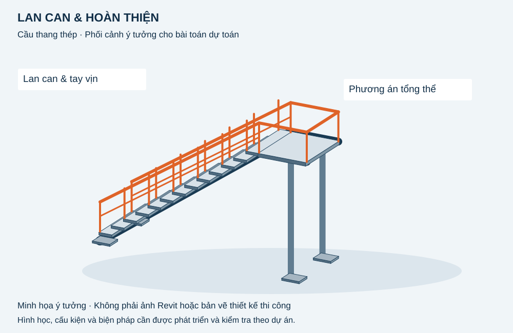

Tiếp nhận & làm rõ đầu bài
Trao đổi về vị trí, công năng, hình thức mong muốn, ngân sách, tiến độ và điều kiện hiện trường. Xác định thông tin còn thiếu thay vì vội đưa ra một con số.
Khách hàng cần một mức giá sơ bộ cho gói turnkey D&C. Chưa có bộ bản vẽ hoàn chỉnh để bóc tách, bạn sẽ bắt đầu từ đâu?
Bạn là Estimator tại một builder chuyên về cầu thang thép ở Úc. Khách hàng gọi điện, mô tả nhu cầu và đề nghị cung cấp Order of Cost Estimate — ước tính chi phí sơ bộ cho một cầu thang thép, bao gồm thiết kế, cung cấp và thi công trọn gói theo hình thức turnkey D&C (Design & Construct).
Bạn là người tiếp xúc với dự án và khách hàng từ giai đoạn đầu, trước khi đội PM được huy động. Khách hàng đang chờ bạn làm rõ yêu cầu, đề xuất hướng giải quyết và giải thích cơ sở của mức giá dự kiến.
Nếu kỹ năng của bạn chỉ dừng ở đo line, tô area và tổng hợp BOQ trên bản vẽ có sẵn, bạn sẽ tư vấn điều gì khi đầu bài còn chưa thành hình?
Trao đổi về vị trí, công năng, hình thức mong muốn, ngân sách, tiến độ và điều kiện hiện trường. Xác định thông tin còn thiếu thay vì vội đưa ra một con số.
Hiểu thiết kế, vật liệu, gia công và biện pháp lắp dựng để đề xuất lựa chọn có cơ sở. Cân nhắc cả chi phí, nguồn cung trong nước, thời gian cung ứng và khả năng thi công.
Tùy loại dự án, Estimator phối hợp với thiết kế, kỹ sư, nhà cung cấp và PM ở các thời điểm khác nhau. Hiểu kỹ thuật giúp tư vấn phương án và xác định phần cần đội chuyên môn kiểm tra, phát triển tiếp.
Trong tình huống này, giá trị của Estimator nằm ở khả năng nối nhu cầu khách hàng với phương án có thể thiết kế, mua sắm và thi công. Hiểu thiết kế và tư vấn concept giúp bạn dẫn dắt cuộc trao đổi; tính toán kết cấu và xác nhận thiết kế được phối hợp với kỹ sư, đội thiết kế phụ trách.
Bạn dựng concept 3D bằng Revit, chuẩn bị góc nhìn hoặc render và mô tả trình tự lắp dựng dự kiến. Khách hàng có thể nhìn thấy hình dáng, cấu kiện chính và phạm vi của gói chào giá, thay vì phải tự hình dung từ một lời giải thích.

Sơ đồ ý tưởng phục vụ bài toán thảo luận, không phải ảnh Revit, render dự án hay biện pháp thi công được phê duyệt. Các nút cho thấy từng lớp cấu kiện; trình tự lắp dựng thực tế cần được xác định theo điều kiện dự án.
| Quyết định | Câu hỏi Estimator cần đặt ra | Ảnh hưởng đến dự toán |
|---|---|---|
| Hình học & kết cấu | Bố trí nào phù hợp không gian và có thể đơn giản hóa gia công, liên kết, lắp dựng? | Khối lượng thép, số cấu kiện, độ phức tạp chế tạo và phần cần kỹ sư kiểm tra. |
| Vật liệu & nguồn cung | Có thể dùng vật liệu, tiết diện và hoàn thiện sẵn trong nước? Nhà cung cấp xác nhận được thời gian giao nào? | Giá mua, vận chuyển, thời gian cung ứng và rủi ro chờ hàng. |
| Gia công & lắp dựng | Lắp theo cụm hay từng cấu kiện? Tiếp cận hiện trường, nâng hạ và phối hợp các đội khác ra sao? | Giờ công, thiết bị, vận chuyển, công tác tạm và thời gian tại công trường. |
| Phạm vi turnkey D&C | Gói chào giá bao gồm thiết kế, gia công, hoàn thiện, vận chuyển, lắp đặt và bàn giao đến đâu? | Tránh bỏ sót hoặc tính trùng; làm rõ trách nhiệm, giả định và phần loại trừ. |
Mục tiêu là tối ưu tổng thể về chi phí, chất lượng và tiến độ trên cùng một phạm vi; giá vật liệu thấp nhất hoặc thời gian giao ngắn nhất chưa đủ để kết luận phương án tốt nhất.
Chuẩn bị câu hỏi cho khách hàng, ghi nhận yêu cầu, thông tin hiện trường cần xác minh và các giả định đang dùng để phát triển phương án.
Đề xuất concept 3D, góc nhìn/render và cách lắp dựng dự kiến. So sánh các lựa chọn về hình thức, vật liệu, nguồn cung và tác động đến chi phí.
Lập cơ cấu chi phí sơ bộ theo phạm vi D&C, nêu nguồn dữ liệu, giả định, phần loại trừ và bất định. Làm rõ mức giá còn cần cập nhật khi thiết kế phát triển.
Revit hỗ trợ diễn đạt concept và khai thác dữ liệu mô hình. Bạn có thể dùng AI để cấu trúc brief, hỗ trợ so sánh phương án hoặc soạn phần giải trình. Vậy bạn sẽ đối chiếu dữ liệu, xác nhận báo giá nhà cung cấp và kiểm tra đầu ra trước khi gửi khách hàng như thế nào?
Nếu chỉ mô tả ý tưởng bằng lời rồi đưa giá, khách hàng sẽ khó biết mức giá đó đang bao gồm điều gì. Khi bạn trình bày bằng mô hình 3D, hình ảnh và logic lắp dựng, cuộc trao đổi trở nên cụ thể hơn: khách hàng nhìn được phương án, hiểu được phạm vi và có cơ sở để đánh giá.
Đó là cơ hội để Estimator thể hiện năng lực tư vấn và tạo niềm tin vào sự chuyên nghiệp của công ty, ngay trước khi đội PM tham gia.
Trao đổi Bài toán 02 cùng TCAXem lại Bài toán 01: Khi thiết kế thay đổiQuay lại các bài toán thực tế